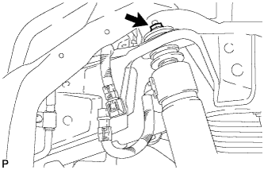

REAR SHOCK ABSORBER > REMOVAL |
| 1. REMOVE REAR WHEEL |
| 2. REMOVE REAR SHOCK ABSORBER ASSEMBLY LH |
Support the rear axle housing.
Disconnect the absorber control actuator connector.
 |
Remove the bolt and disconnect the rear shock absorber assembly LH from the rear axle housing.
|  |
Remove the nut, cushion No. 1 and rear shock absorber assembly LH.
Remove the cushion No. 2 from the shock absorber assembly rear LH.